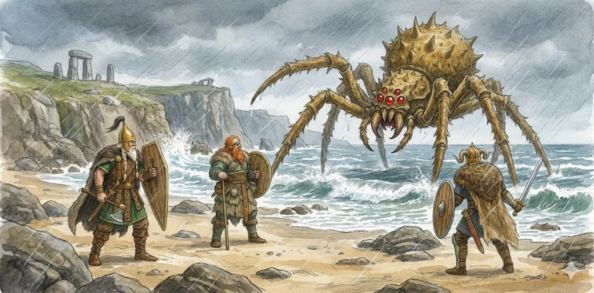

???
???
Für diese mögliche Unterart liegt noch kein gesichertes Dossier vor.
Aleria · Küsten, Sümpfe, Mangroven und Flussdeltas · Archivblatt VI / VI
Riesenspinnen · Schwer gepanzerte Jagdarthropoden
Langsame, amphibische Riesenspinnen mit segmentiertem Chitinpanzer, tiefem Schwerpunkt und mahlenden Mandibeln, die Beute durch Masse und stetiges Vorrücken überwältigen.

„Schlag nicht auf den Panzer. Such das Gelenk – oder such einen anderen Weg.“Lehrsatz der Küstenwachen
Sechs Merkmale · Skala 1–10
Die Panzerspinne erreicht ihre höchsten Werte durch Kraft und Widerstandskraft. Ihre geringe Geschwindigkeit begrenzt Jagdintelligenz und großräumige Revierkontrolle.
Quelle der Einordnung: Aus Panzerung, Körpermasse, amphibischer Lebensweise und geringer Geschwindigkeit abgeleitet
Panzerspinnen sind weder Netzjäger noch Läufer, sondern lebende Panzer. Langsam, schwer und nahezu unaufhaltsam marschieren sie durch ihren Lebensraum und verändern dabei Pfade, Ufer und weichen Untergrund.
Ein massiver, segmentierter Chitinpanzer umschließt den Körper. Bei der regelmäßigen Häutung bleiben schwere, beinahe vollständige Hüllen zurück.
Nahrung wird mechanisch zerkleinert und nicht durch starkes Gift vorbereitet. Die Mandibeln arbeiten dabei wie ein schweres Mahlwerk.
Panzerspinnen bevorzugen amphibische Zonen: Küsten, Sümpfe, Mangroven und Flussdeltas. Sie können lange im Wasser bleiben, sind jedoch keine reinen Wasserwesen.
Weicher Untergrund begünstigt ihren schweren, niedrigen Körperbau. Felsige Trockenregionen meiden sie, weil dort die Gelenke stärker belastet werden und Häutungsplätze rasch austrocknen.
Panzerspinnen sind aktive, aber langsame Jäger. Sie verlassen sich auf Panzerung, Masse und stetiges Vorrücken, bis die Beute keine sichere Ausweichlinie mehr besitzt.
Panzerspinnen gelten als hohe lokale Bedrohung, aber nicht als Plage. Wo sie regelmäßig wandern, verändern Siedlungen ihre Wege und Küstenrouten, statt die Tiere frontal zu bekämpfen.
Kleinere Verletzungen und Schmerzen halten eine Panzerspinne kaum auf. Zermalmung, Greifkraft und schwere Panzerstöße sind ihre wichtigsten Waffen.
Nur schwere Waffen, Feuer oder präzise Treffer auf Gelenke zeigen verlässlich Wirkung. Angriffe auf die Panzerplatten selbst erschöpfen meist den Gegner, bevor das Tier ernsthaft verletzt wird.
Der Lebenszyklus ist langsam. Während der Häutung ziehen sich Panzerspinnen tief zurück, denn der neue Panzer bleibt zunächst weich. Jungtiere sind leichter und beweglicher, besitzen aber eine hohe Sterblichkeit.
Panzerplatten werden für Schilde und schwere Rüstungen gesucht, Mandibeln zu Werkzeugen oder Waffen verarbeitet. Besonders begehrt sind verlassene Häute, weil ihre Bergung keine Jagd auf ein lebendes Tier erfordert.
Gezielte Jagden bleiben selten. Gewicht, Widerstandskraft und schwieriges Gelände machen jeden erlegten Panzer zu einem kostspielig gewonnenen Rohstoff.